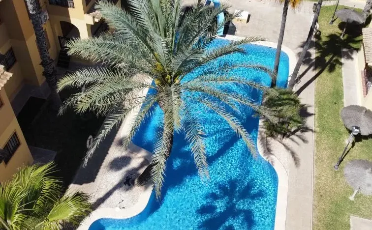
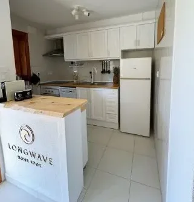
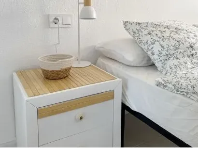
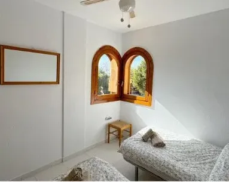
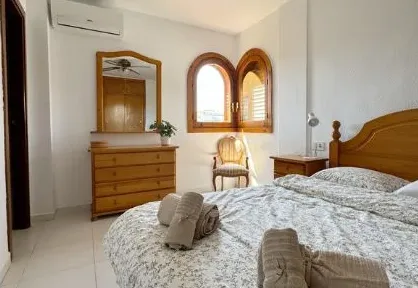
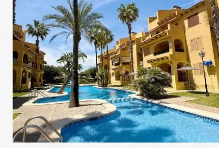
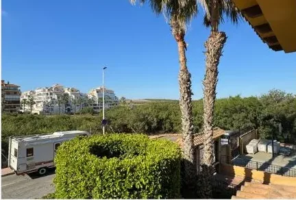
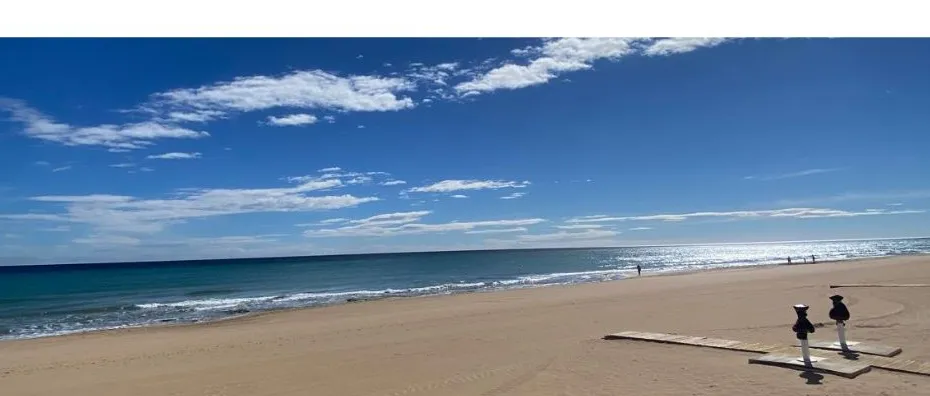

Twoje miejsce na Costa Blanca.
Apartament LONGWAVE nad Morzem Śródziemnym, dostępny przez cały rok.

Dzień zaczyna się na tarasie.
Apartament w La Mata ma 105 m²: trzy sypialnie, salon z kuchnią, taras i dwie łazienki. Wszystkie pomieszczenia są klimatyzowane, na miejscu jest Wi-Fi.
Prywatne osiedle oferuje ogród z basenem, podziemny parking, boiska i strefę grillową. W pobliżu znajdują się plaża, promenada, restauracje oraz sklepy.
To baza do poznawania Costa Blanca: Torrevieja, Alicante, Altea i innych miejsc na wybrzeżu. Lotnisko Alicante znajduje się w odległości około 30 minut jazdy.
Termin pobytu, wyposażenie, transfer i warunki wynajmu potwierdzisz bezpośrednio z LONGWAVE. Napisz daty i liczbę gości — odpowiemy na pytania o dostępność.
105 m²
3 sypialnie · 2 łazienki
Taras · Wi-Fi · klimatyzacja
Kadry LONGWAVE
Rozgość się w La Mata.







